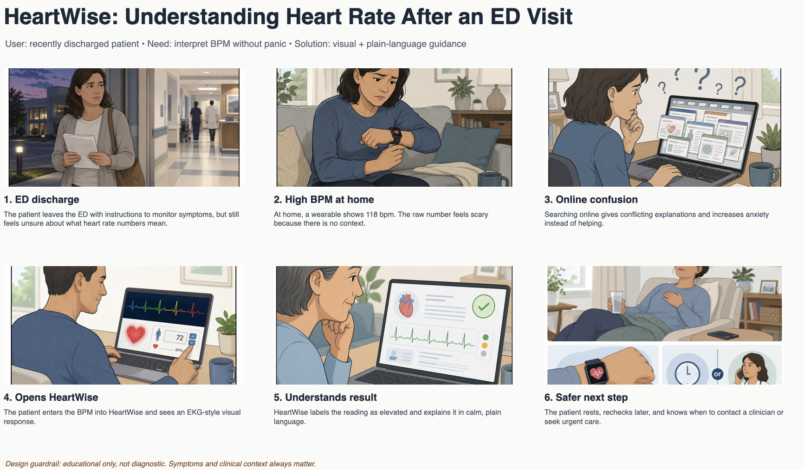

A patient leaves the ER with more questions than answers. Their smartwatch shows 118 BPM. Is that dangerous? Should they call someone? HeartWise turns that number into understanding.
HeartWise is designed for patients who see heart rate numbers after a clinical visit or through a wearable device but don't know how to interpret them. Raw BPM readings without context create anxiety, confusion, and poor decision-making. HeartWise replaces guesswork with clear, visual, plain-language guidance.
As a patient recovering at home after an ED visit, I want to understand what my heart rate number means in simple language so that I can decide whether to rest, keep monitoring, contact a clinician, or seek urgent care without needing medical training or wading through conflicting search results.
A patient or family member without medical training who encounters raw BPM numbers from hospital monitors, wearables, or discharge paperwork and feels overwhelmed by what they see.
A way to understand whether a reading is low, normal, elevated, or critical and what general next steps might be appropriate without being buried in technical jargon or alarming clinical language.
Users enter a BPM value and instantly see a live EKG-style waveform, a color-coded zone indicator, and calm plain-language guidance. The visual connection between the number and the signal makes interpretation intuitive.
A real patient journey: discharged after an emergency visit, a smartwatch flashes 118 BPM. Without context, that number feels like a threat. Here's how it unfolds, step by step.
The patient leaves the Emergency Department with instructions to monitor symptoms at home but no clear explanation of what normal versus concerning numbers look like.
Sitting on the couch, the patient's smartwatch shows 118 BPM. The raw number offers no context. Is this a leftover effect of the ED visit, or something to worry about?
A Google search returns a mix of alarming forum posts and dense medical articles. The conflicting information increases anxiety rather than reducing it.
The patient enters 118 into HeartWise and immediately sees a scrolling EKG waveform, an orange "Elevated" zone badge, and a calm explanation of what elevated heart rate can mean.
The visual waveform shows the patient how BPM affects the rhythm of their heartbeat. The color zone makes the interpretation instantly clear: elevated, not critical.
The patient feels less anxious. They choose to rest, monitor the reading, and know exactly when to contact their clinician, armed with context instead of fear.
This storyboard traces the full patient experience, from leaving the ER with unanswered questions to opening HeartWise and finding calm, actionable understanding.

HeartWise works not because it is the most technically complex solution, but because it is precisely matched to what a non-clinical user actually needs in a moment of uncertainty.
A live EKG waveform makes the abstract BPM number tangible. You see the rhythm, not just the count.
Blue, Green, Orange and Red zone indicators give instant, pre-attentive understanding without reading a word.
HeartWise requires no login, no health records, and no backend. Patient privacy is preserved by design.
All explanations are written for a general audience: calm, clear, and free of medical jargon.
Every change in BPM updates the waveform and interpretation in real time. No loading, no friction.
HeartWise is explicit that it is educational. It guides users toward clinical care, not away from it.
Honest design requires confronting failure modes. Here are the two primary risks and our mitigation approach for each.
Users may treat HeartWise as a medical authority and delay seeking urgent care. To address this, the interface clearly labels itself as an educational prototype and prominently states that symptoms, not numbers alone, determine urgency.
Every elevated or critical zone display is accompanied by plain-language context and a reminder to seek clinical care for symptoms. The app guides. It does not diagnose.
Seeing an orange "Elevated" or red "Critical" badge could alarm users rather than inform them, especially those already anxious about cardiac symptoms.
Each color zone is paired with practical next steps written in a calm, empowering tone. "Your heart rate is elevated. This can happen after activity, stress, or caffeine. Monitor for symptoms and contact your doctor if concerned."
A simpler solution, a static heart rate reference chart, would list bradycardia, normal, elevated, and critical ranges. But it cannot show how BPM affects the waveform rhythm, making it less engaging and less intuitive. HeartWise keeps the solution simple while making the information interactive, visual, and personally meaningful. The added complexity of an animated waveform is justified because static charts fail to build the conceptual bridge between a number and a lived cardiac experience.
Design Disclaimer: HeartWise is an educational prototype and does not provide medical diagnosis. Users should seek urgent care if they experience severe or worsening symptoms such as chest pain, fainting, severe shortness of breath, or sudden weakness. Heart rate numbers alone are not sufficient to determine the severity of a cardiac event.